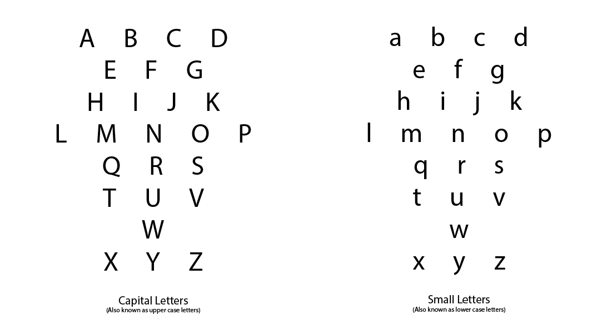

Alphabet
Teaching the Alphabet
The alphabet is a tremndously exciting invention based on a great discovery: that all of human language is composed of a small number of irreducible speech sounds. In teaching the alphabet, you can convey to your student the excitement of this great discovery and the marvelous invention based on it. "Did you know that every word you speak can be put down on paper?" you tell the student. That's exciting. "And that's what you are going to learn to do -- to put down on paper every sound of speech you make."
Thus, you've established the concept of a set of written symbols representing speech sounds. This is the association you want to establish in the student's mind: that letters on paper stand for sounds he can make with his voice, and that the sounds he makes can be put down on paper by way of letters representing them.
For a younger child who has not yet learned the alphabet, the fastest and most efficent way to teach it is to have the child repeat it after you in alphabetical order while you point to the letters. Thus, the child learns the alphabet both orally and visually. Usually the oral learning will be faster than the visual; since the oral alphabet, when repeated often enough, is learned almost like a melody or a poem. The alphabet lends itself easily to this kind of learning since it can be broken up into rythmical and rhyming lines as follows:

It will take some time before the child's visual learning catches up with his oral knowledge. Indeed, some children learn to recite the alphabet perfectly long before they are able to identify all of the letters at random. This is perfectly normal since the child has had much oral practice learning to speak the language. However, now he is required to do highly precise visual learning, which may take some getting used to, especially if the child has had little exposure to print.
Children with photographic memories will learn visually much faster than those not so favorably endowed. The slowest learners will be those with weak visual memories. These children will benefit most from simple alphabetic exercises, such as repeating the letters at random, several at a time, as in the Prereading Alphabet Exercises in the Workbook, and by reviewing the alphabet flash cards that are included with this program.
Some Practical Suggestions
Please note that this manual is written as if addressed to an instructor who has one student. However, the information in this manual applies equally to a teacher who has a classroom of students.
Ideally, each student should have his or her own copy of Blumenfeld's Alpha-Phonics, plus a lined notebook in which to write the words being learned. This will reduce the need for time-consuming board work by the teacher.
Writing the words helps in learning to spell them correctly. Also, it is advisable to assign some written homework after each learning session. The purpose of homework is to speed up the acquisition, retention, and improvement of skills.